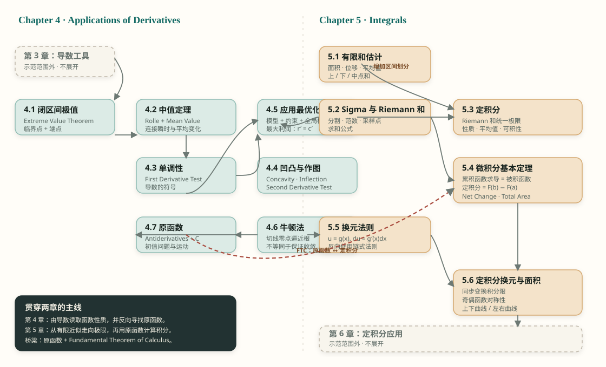

概念闭环
先读“本章定位”，再核对定理条件，最后用一个教材例题结论验证自己是否理解。术语表中的公式和例子用于回查，不要求孤立背诵。
第 4、5 章不是两套孤立计算技巧：中值定理把变化率与函数行为连接起来，原函数又与微积分基本定理连接起来。本示范稿用术语、知识依赖、定理条件、例题结论和原创分层练习构成可核查的学习闭环。
00 · Orientation
先读“本章定位”，再核对定理条件，最后用一个教材例题结论验证自己是否理解。术语表中的公式和例子用于回查，不要求孤立背诵。
练习卡先只看题目；依次展开“提示 → 关键步骤 → 完整解析”。每道题都标注章节、题型、难度和对应知识点，便于定位薄弱环节。
用章末掌握清单记录“能否独立完成”。若只记住公式却不能说明条件、不能从图形解释结论，说明仍需回看对应节。
知识地图 → 章首目标 → 逐节概要 → 教材例题结论 → 掌握清单。适合第一次系统学习本章。
选择练习 → 看对应知识点 → 回到本节公式卡 → 用完整解析校准步骤。适合已有初步基础时检查漏洞。
Q4-01 等是本文档内部练习编号；教材定理号、例题号和页码单独标注。内部编号不代表教材编号。
01 · Dependency Map

4.1 先确认极值存在并给出候选点；4.2 用 Rolle 定理证明中值定理，再推出“导数为零则常数”和单调性；4.3、4.4 把一阶、二阶导数转化为图形信息；4.5 在最优化中完成全局检查；4.6 用切线求根；4.7 反向积分并处理初值条件。
5.1 用有限和估计面积、位移和平均值；5.2 用 Sigma 记号组织有限和并形成 Riemann 和；5.3 通过分割范数趋于零定义定积分；5.4 用微积分基本定理连接定积分和原函数；5.5、5.6 以换元处理复合函数，并计算对称积分和两曲线间面积。
flowchart TB
A["第 3 章：导数工具"] --> B["4.1 闭区间极值"]
B --> C["4.2 Mean Value Theorem"]
B --> D["4.5 Applied Optimization"]
C --> E["4.3 单调性与一阶导数判别法"]
C --> F["4.4 凹凸性、拐点、二阶导数判别法"]
E --> D
F --> D
A --> H["4.6 Newton 法"]
C --> I["4.7 Antiderivative"]
I <--> J["5.4 Fundamental Theorem of Calculus"]
J --> K["5.5 Substitution Rule"]
K --> L["5.6 定积分换元与曲线间面积"]
M["5.1 有限和估计"] --> N["5.2 Sigma 与 Riemann 和"]
N --> O["5.3 Definite Integral"]
O --> J
O --> P["积分性质与平均值"]
J --> Q["Net Change Theorem"]
D --> R["第 6 章：定积分应用"]
L --> R
02 · English Terminology
术语定义以教材语境为准。尤其注意：critical point 包含“导数为 0”与“导数不存在”两种内点；definite integral 是数值，indefinite integral 是含任意常数的一族函数。
| English term | 中文译名 | 简明定义 | 对应节 | 关键公式 / 提示 |
|---|
| 易混项 | 关键区别 | 检查问题 |
|---|---|---|
| local extremum / absolute extremum | 局部极值只与附近点比较；绝对极值要与整个定义域比较。 | 题目问的是“附近最大值”还是“全局最大/最小值”？ |
| critical point / extremum | 临界点只是极端值可能出现的候选点，可能没有任何极值。 | 导数符号是否改变？端点值是否参与比较？ |
| monotonicity / concavity | 单调性来自 f′ 的正负；凹凸性来自 f′ 增加或减少，通常看 f″ 的正负。 | 是在说“升/降”，还是在说“弯曲方向”？ |
| antiderivative / indefinite integral | antiderivative 是一个函数；indefinite integral 是全部原函数组成的集合。 | 是否写了任意常数 C？ |
| definite integral / indefinite integral | 定积分是数值；不定积分是一族函数。 | 结果应为数，还是应含 +C？ |
| displacement / distance traveled | 位移用速度积分，正负可抵消；总路程用速率积分。 | 速度是否经过零点并改变方向？ |
| Riemann sum / definite integral | 黎曼和是有限近似；定积分是范数趋于 0 时的统一极限。 | 是否已经取极限？ |
| upper/lower curve / right/left curve | 关于 x 积分用上下函数相减；关于 y 积分用右左函数相减。 | 矩形条带是竖直还是水平？ |
点击字母会筛选英文术语的起始字母。
Chapter Summary
本章把导数从“计算变化率”的工具，扩展为读取极值、单调性、凹凸性、最优化和数值求根的方法；最后通过原函数开始逆向恢复函数。
极值首先由“在哪个定义域上比较”决定。绝对极值是全局比较，局部极值只与邻域内点比较。若函数在有限闭区间连续，Extreme Value Theorem 保证绝对最大值和最小值存在；但要找位置，还必须比较内临界点与端点。
条件：闭且有限的区间；函数在该区间上连续。
只是必要条件。端点极值和不存在的导数不包含在这个等式中。
Rolle 定理说明“端点等高时至少有一条水平切线”；中值定理把它倾斜化，声称某一点的瞬时变化率等于整个区间的平均变化率。后续关于常数函数、单调性、原函数只差常数等结论都由此推出。
[a,b] 连续，(a,b) 可导，且 f(a)=f(b)。
[a,b] 连续，(a,b) 可导；不需要在端点可导。
| 结论 | 形式 | 典型用途 |
|---|---|---|
| Corollary 1 | 区间上 f′≡0 ⇒ f 为常数 | 排除看似复杂但导数为零的函数 |
| Corollary 2 | 区间上 f′≡g′ ⇒ f−g 为常数 | 原函数族只差一个常数 |
| Corollary 3 | f′>0 或 f′<0 ⇒ f 在该区间增或减 | 制作单调性符号表 |
用临界点把定义域分成互不重叠的区间，在每个区间只抽取一个易算点判断 f′ 的符号。若 f′ 在临界点从左到右由负变正，则出现局部最小；由正变负则出现局部最大；不变号则没有极值。
临界点 | 测试点 | f′ 符号 | 函数行为。四个栏目应同时写，避免只解方程却不判断导数是否变号。
端点只有一个方向可观察。教材允许按半开区间定义端点局部极值，做闭区间全局比较时仍要把端点值纳入。
凹凸性描述斜率如何变化：f′ 增加为 concave up，f′ 减少为 concave down。拐点必须同时满足“曲线有切线”和“凹凸性改变”。二阶导数为零只是候选条件，不是充分条件。
f″ 在包含 c 的开区间连续；若 f″(c)=0，检验失效。
最优化不是“求一个导数为零的点”就结束。还应写出可行域、用约束消元、比较端点和临界点，并用一阶符号、二阶导数或边界行为论证全局最优。经济模型中，利润 p=r−c 在内部临界点取得时满足边际收益等于边际成本。
牛顿法在当前估计点作切线，把切线与 x 轴的交点作为下一次估计。它通常迭代很快，但不保证收敛；初始值不佳时可能振荡、跑到另一个根或逐步变差。
先选 x₀；每步要求 f′(xₙ)≠0。可用 |f(xₙ)| 接近 0 和 |xₙ₊₁−xₙ| 变小检查收敛。
原函数是导数的逆向恢复。若 F 是 f 的一个原函数，则 f 的全部原函数为 F(x)+C。初值问题通过一个函数值确定 C；若涉及加速度，通常要连续积分两次，并分别使用速度与位置条件。
在同一个区间 I 上讨论；C 是任意常数。
本题用于幂函数；n=−1 时不能使用此公式。
| 教材例题 | 可复用结论 | 位置 |
|---|---|---|
| Example 1（4.1） | 同一个 y=x² 在四个不同定义域上具有不同的绝对极值结构。 | 教材 p.202 / PDF p.203 |
| Example 4（4.1） | f(x)=x^(2/3) 在 [−2,3]：最大值 ∛9 于 x=3，最小值 0 于不可导点 x=0。 | 教材 p.206 / PDF p.207 |
| Example 2（4.2） | f(x)=x² 在 [0,2] 上，中值定理中的 c=1。 | 教材 p.211 / PDF p.212 |
| Example 2（4.3） | x^(1/3)(x−4) 在 x=0 有临界点但无极值；x=1 有绝对最小值 −3。 | 教材 p.217–218 / PDF p.218–219 |
| Example 8（4.4） | x⁴−4x³+10：x=3 有局部与绝对最小值 −17；x=0、2 为拐点。 | 教材 p.224–225 / PDF p.225–226 |
| Example 1（4.5） | 12 cm 正方形做无盖盒，割去 2 cm 时体积最大，为 128 cm³。 | 教材 p.232–233 / PDF p.233–234 |
| Example 2（4.5） | 一升圆柱罐最小表面积在 h=2r；r=(500/π)^(1/3) cm。 | 教材 p.233–234 / PDF p.234–235 |
| Example 2（4.6） | x³−x−1=0 从 x₀=1 迭代，根约为 1.324717957。 | 教材 p.246–247 / PDF p.247–248 |
| Example 5（4.7） | 上升气球释放包裹：两次积分并用初值条件，落地时间约 2.63 s。 | 教材 p.252–253 / PDF p.253–254 |
f′(c)=0 并不推出极值；必须检查符号变化或继续比较函数值。
闭区间绝对极值常常在端点取得；“所有临界点”并非全部候选。
f′ 正表示上升，f″ 正表示斜率增加；曲线可以在递增的同时凹向下。
f(x)=x⁴ 在 x=0 处 f″=0，但凹向上性质没有改变，不是拐点。
初始猜测和函数形状会影响收敛；不能把“算了几步”当作“证明收敛”。
不定积分必须带 C；定积分是数值，不能再附加积分常数。
Chapter Summary
本章从有限个矩形出发，以分割范数趋于零形成定积分；再用微积分基本定理把复杂极限转化为原函数端点之差，并通过换元与面积计算扩展应用。
把一个区间切成若干小段，在每段用采样值乘宽度，再相加。面积、无转向运动的位移和连续函数平均值都能用同一有限和结构估计。更多更细的矩形带来更好的近似，但尚未等于定积分。
Sigma 记号把大量有限项压成一个表达式。应用前先写清“指标从哪开始、到哪结束、项是什么”。Riemann 和允许不等宽分割，但整个分割是否越来越细由最大子区间宽度，也就是范数 ||P|| 控制。
通常需要这些公式把和表示成 n 的显式函数，再取 n→∞。
分割 P、采样点 cₖ 和子区间宽度均可变化；定积分要求所有合法选择给出同一极限。
定积分是 Riemann 和当分割范数趋于零时的统一极限。对连续函数或只有有限个跳跃间断的函数，定积分存在。非负函数的定积分是面积；一般函数的定积分是带符号面积，可以正负抵消。
极限必须对任意越来越细的分割及任意合法采样点给出同一个数。
区间长度 b−a 不能为零；平均值的几何意义是“等面积矩形高度”。
定积分中值定理保证连续函数在区间上取到自己的平均值。微积分基本定理把“累计面积函数”的导数还原为被积函数，并说明定积分可由任一原函数在端点的差计算。它同时支持净变化解释：变化率的积分等于终值减初值。
f 在 [a,b] 连续；若上限是 g(x)，还要使用链式法则乘 g′(x)。
f 在 [a,b] 连续，F 是 f 在区间上的任一原函数。
F 可导且变化率可积；位移可抵消，总路程需要 |v|。
在函数零点处分段 → 逐段积分 → 对各段积分取绝对值 → 相加。不能把 ∫|f| 与 |∫f| 混为一谈。
换元法本质上是反向使用链式法则。关键是选择内层表达式 u=g(x)，把 du=g′(x)dx 替换完整。若缺少常数倍，可以乘除调整；若某些 x 因子无法用 du 表示，可能需要从 u=g(x) 解出 x。
u=g(x) 可导且其值域是区间；f 在该区间连续。最后要代回 u=g(x)。
定积分换元时可直接把 x 的上下限变为 u 的上下限；另一条路线是先求不定积分、代回 x，再用原积分限。对称区间上，偶函数积分为 0 到 a 的两倍，奇函数积分为 0。两曲线间面积用“上减下”或“右减左”，并先求交点分段。
g′ 连续；f 在 g 的值域上连续。积分限必须同步变换。
若曲线关系在区间内变化，必须在交点处分段；也可换成关于 y 的右减左。
| 教材例题 | 可复用结论 | 位置 |
|---|---|---|
| Example 1（5.1） | v(t)=160−9.8t 在 0≤t≤3：3 段上用左端点得 450.6，用右端点得 421.2；细分提高精度。 | 教材 p.270 / PDF p.271 |
| Example 2（5.1） | 同一运动用 v 与 |v| 分别估计位移和总路程；示例最终对应 78.4 m 与 166.6 m。 | 教材 p.271–272 / PDF p.272–273 |
| Example 5（5.2） | 用 n 个等高矩形求下和，并取 n→∞，得到 y=1−x² 在 [0,1] 下方面积 2/3。 | 教材 p.279–280 / PDF p.280–281 |
| Example 4（5.3） | 从 Riemann 和与三角形面积两种方式得到 ∫₀ᵇ x dx=b²/2。 | 教材 p.289–290 / PDF p.290–291 |
| Example 5（5.3） | 半圆函数在 [−2,2] 上的平均值为 π/2。 | 教材 p.292 / PDF p.293 |
| Example 2（5.4） | 上限为 x² 时，FTC 第一部分与链式法则给出导数 2x cos(x²)。 | 教材 p.298 / PDF p.299 |
| Examples 6–7（5.4） | 负函数定积分可以为负；sin x 在 [0,2π] 的积分为 0，但总面积是 4。 | 教材 p.303–304 / PDF p.304–305 |
| Example 2（5.5） | ∫√(2x+1)dx=(1/3)(2x+1)^(3/2)+C。 | 教材 p.309 / PDF p.310 |
| Example 1（5.6） | ∫₋₁¹3x²√(x³+1)dx=4√2/3，两种积分限路线结果相同。 | 教材 p.315 / PDF p.316 |
| Examples 4–6（5.6） | y=2−x² 与 y=−x 围成面积 9/2；另一区域分别用 x 与 y 积分都得 10/3。 | 教材 p.318–320 / PDF p.319–321 |
Riemann 和只是近似；定积分还需要范数趋于 0 并且所有选择共享同一极限。
只有在 f≥0 时，∫f 才直接等于几何面积；一般情况应分段取绝对值。
∫ₐ^(g(x)) f(t)dt 的导数是 f(g(x))g′(x)，不是简单的 f(x)。
若积分变量已从 x 变成 u，上限和下限也必须分别变为 g(a)、g(b)。
对称区间公式要求区间 [−a,a]；对非对称区间不能直接套用。
先画图确认谁是上曲线或右曲线；若方向反了，会得到负面积或错误分段。
05 · Deliberate Practice
题目不复制教材课后题，而是覆盖本章核心结构。先独立作答，再逐层展开答案。难度标签表示当前题目的认知跨度，不表示复习顺序。
06 · Recall & Diagnosis
输入内容会自动保存在当前浏览器。它不是课程记录，也不设置复习期限。
| 练习编号 / 知识点 | 错误类型 | 应回看的内容 |
|---|---|---|
尚未编辑
合上页面，分别复述 Extreme Value Theorem、MVT、FTC 两部分的“条件 + 结论 + 一个反例风险”。
从 30 道练习中任选一道计算题、一道证明题和一道综合题；只在能独立写出关键步骤时勾选掌握项。
解释“4.7 的原函数如何由 5.4 的 FTC 第二部分进入定积分求值”，并举出本题库中的对应题目。
把错误定位到一个可回查对象：术语、定理条件、例题方法或积分区间；不要只记录“粗心”。
07 · Formula Desk
| 主题 | 公式 / 规则 | 适用条件或用途 | 回链 |
|---|---|---|---|
| Extreme Value Theorem | 闭区间连续 ⇒ 存在两端绝对极值 | 先保证极值存在 | 4.1 |
| Mean Value Theorem | [f(b)−f(a)]/(b−a)=f′(c) | [a,b] 连续，(a,b) 可导 | 4.2 |
| Second Derivative Test | f′=0 且 f″ 正负决定极值类型 | f″(c)=0 时失效 | 4.4 |
| Newton’s Method | xₙ₊₁=xₙ−f(xₙ)/f′(xₙ) | f′(xₙ)≠0，不保证全局收敛 | 4.6 |
| General Antiderivative | ∫f(x)dx=F(x)+C | 同一个区间上讨论 | 4.7 |
| Finite Sum | Σf(cₖ)Δxₖ | 面积、位移、平均值估计 | 5.1–5.2 |
| Definite Integral | lim||P||→0Σf(cₖ)Δxₖ | 范数趋零且极限统一 | 5.3 |
| Average Value | av(f)=[1/(b−a)]∫ₐᵇf | 区间长度非零 | 5.3 |
| FTC Part 1 | d/dx∫ₐˣf(t)dt=f(x) | f 连续；上限复合时加链式法则 | 5.4 |
| FTC Part 2 | ∫ₐᵇf=F(b)−F(a) | F 是连续 f 的原函数 | 5.4 |
| Substitution | ∫f(g(x))g′(x)dx=∫f(u)du | u=g(x)，最后代回 | 5.5 |
| Area Between Curves | ∫[upper−lower]dx 或 ∫[right−left]dy | 先画图、求交点并分段 | 5.6 |
08 · Source Ledger
| 核对项 | 教材原本信息 | 本资料处理 |
|---|---|---|
| 书名 | Thomas’ Calculus | 保留英文原书名 |
| 版本 | Fourteenth Edition in SI Units（2020） | 只按此版本核对章节和页码 |
| 作者 | Joel Hass、Christopher Heil、Maurice D. Weir | 来源记录，不将其内容混入其他版本 |
| ISBN 13 | 978-1-292-25322-0 | 版本校准依据 |
| 文件 | Thomas Calculus 14th Edition in SI Units (1).zip 内唯一教材 PDF | 从包内提取只读正文，未使用旧课程说明、试卷或复习稿 |
| 页数 | PDF 共 1244 个物理页 | 正文页与 PDF 物理页分开标注 |
| 章节范围 | 第 4 章 Applications of Derivatives；第 5 章 Integrals | 仅制作第 4、5 章，不展开其他章节 |
| 文本可读性 | PDF 有文字层；公式排版复杂 | 抽取文本后对关键定理与公式做页面视觉复核 |
| 节 | 教材页 | PDF 物理页 | 本资料内部标题 |
|---|---|---|---|
| 4.1 | 201–208 | 202–209 | 闭区间极值 |
| 4.2 | 209–214 | 210–215 | 中值定理 |
| 4.3 | 215–219 | 216–220 | 单调性与一阶导数判别法 |
| 4.4 | 220–231 | 221–232 | 凹凸性与曲线作图 |
| 4.5 | 232–243 | 233–244 | 应用最优化 |
| 4.6 | 244–248 | 245–249 | 牛顿法 |
| 4.7 | 249–258 | 250–259 | 原函数 |
| 5.1 | 266–275 | 267–276 | 有限和估计 |
| 5.2 | 276–282 | 277–283 | Sigma 与 Riemann 和 |
| 5.3 | 283–295 | 284–296 | 定积分 |
| 5.4 | 296–305 | 297–306 | 微积分基本定理 |
| 5.5 | 307–313 | 308–314 | 不定积分与换元 |
| 5.6 | 314–323 | 315–324 | 定积分换元与曲线间面积 |
已核对封面、版权页、目录和第 4–5 章边界；没有把相邻章节展开到正文中。
13 个节、定理号、代表性例题和教材页／PDF 物理页均保留对应位置；旧资料未混入。
原创练习已完成 33 项代表性数值核对；站点通过桌面与移动端宽度测试，PDF 已完成逐页筛查。
后续章节沿用同一模板：术语映射、知识依赖、条件化定理、例题结论、分层练习和来源记录缺一不可。